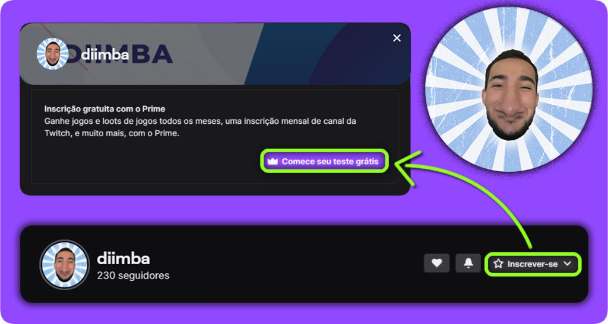

Ganhe seu Sub de graça!
Você sabia que pode garantir 1 mês de sub gratuito na Twitch? Vou explicar a baixo como fazer!
Acesse o link clicando na imagem abaixo e clique em
“Teste GRÁTIS por 30 dias“
Após clicar em “Teste GRÁTIS por 30 dias” cria sua conta gratuitamente na AMAZON!
Após Criar sua conta e clicar na imagem acima clique em “EXPERIMENTE O PRIME”

Clique na imagem acima e seja sub do meu canal!